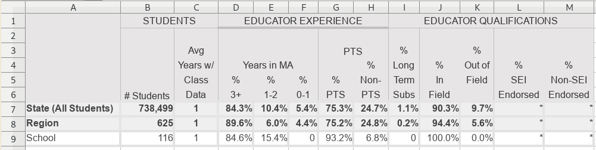

9.7 School performance
A certain United States state education department provides its schools with spreadsheets of statistics. I bet the children in that state get a great education, because there’s at least one R enthusiast on the staff whose curiosity has never left them.
9.7.1 Sheet 1
The first sheet is an example of mixed headers in column 1 being distinguished
by bold
formatting.
Filter for the bold cells in column 1 and assign them to a variable. Then
behead() the other headers, and finally enhead() the bold headers back on.

Download the file, modified from an original source provided to the author.
cells <-
xlsx_cells(smungs::school, "Sheet1") %>%
dplyr::filter(!is_blank)
formats <- xlsx_formats(smungs::school)
bold_headers <-
cells %>%
dplyr::filter(col == 1L, formats$local$font$bold[local_format_id]) %>%
select(row, col, bold_header = character)
cells %>%
behead("NNW", "metric") %>%
behead("W", "plain-header") %>%
enhead(bold_headers, "WNW") %>%
select(row, data_type, numeric, metric, `plain-header`) %>%
spatter(metric) %>%
select(-row)## # A tibble: 21 x 10
## `plain-header` `% Advanced` `% Needs Improv… `% Proficient`
## <chr> <dbl> <dbl> <dbl>
## 1 All Students 0.515 0.0297 0.446
## 2 Economically … 0.333 0.0667 0.567
## 3 Non-Economica… 0.592 0.0141 0.394
## 4 Students w/ D… NA NA NA
## 5 Non-Disabled 0.565 0.0217 0.413
## 6 ELL NA NA NA
## 7 Non-ELL 0.525 0.0202 0.444
## 8 African Amer.… NA NA NA
## 9 Asian NA NA NA
## 10 Hispanic/Lati… NA NA NA
## # ... with 11 more rows, and 6 more variables: `% Proficient or
## # Higher` <dbl>, `% Warning/ Failing` <dbl>, CPI <dbl>, `Median
## # SGP` <dbl>, `N Included` <dbl>, `N Included in SGP` <dbl>9.7.2 Sheet 2
The second sheet is variation on two clear rows of text column headers, left
aligned. Here, there
are three rows of colum headers. The first row is left-aligned, and the second
and third rows are directly above the data cells. But the second row is blank
above columns D and E. That doesn’t actually matter; in the output, header_2
will be NA for data from those columns.

Download the file, modified from an original source provided to the author.
xlsx_cells(smungs::school, "Sheet2") %>%
select(row, col, address, data_type, character, numeric, is_blank) %>%
mutate(character = str_trim(character)) %>%
behead("NNW", "header_1") %>%
behead("N", "header_2") %>%
behead("N", "header_3") %>%
behead("W", "classroom") %>%
dplyr::filter(!is_blank, !is.na(header_3)) %>%
arrange(col, row)## # A tibble: 32 x 11
## row col address data_type character numeric is_blank header_1
## <int> <int> <chr> <chr> <chr> <dbl> <lgl> <chr>
## 1 5 4 D5 character 10 NA FALSE MCAS Su…
## 2 6 4 D6 character 10 NA FALSE MCAS Su…
## 3 7 4 D7 character 10 NA FALSE MCAS Su…
## 4 8 4 D8 character 10 NA FALSE MCAS Su…
## 5 5 5 E5 character 4 NA FALSE MCAS Su…
## 6 6 5 E6 character 8 NA FALSE MCAS Su…
## 7 7 5 E7 character 5 NA FALSE MCAS Su…
## 8 8 5 E8 character 10 NA FALSE MCAS Su…
## 9 5 6 F5 numeric <NA> 0.342 FALSE Possibl…
## 10 6 6 F6 numeric <NA> 0.319 FALSE Possibl…
## # ... with 22 more rows, and 3 more variables: header_2 <chr>,
## # header_3 <chr>, classroom <chr>9.7.3 Sheet 3
The third sheet is variation on two clear rows of text column headers, left aligned, with a nasty catch. The creator of the spreadsheet didn’t merge cells to make space for more words. They didn’t even ‘centre across selection’ (which is sometimes safer than merging cells). Instead, they wrote each word on a separate line, meaning it is ambiguous whether a cell part of another header, or a header in its own right.

Download the file, modified from an original source provided to the author.
Compare columns C and D. Column C has a single header, “Avg Years w/ Class Data”, written across four cells. Column D has two levels of headers, “Years in MA” first, then “% 3+” nested within it (and written across two cells). There’s no way for a machine to tell which cells are whole headers, and which are parts of headers.
We can deal with this by first treating every cell as a header in its own right,
and then concatenating the headers of rows 2 to 5. Using the "NNW" direction,
headers like “Years in MA” in cell D4 will be carried to the right, which is
good. Unfortunately so will headers like “# Students” in cell B2, which we’ll
just have to put up with.
cells <-
xlsx_cells(smungs::school, "Sheet3") %>%
dplyr::filter(!is_blank) %>%
select(row, col, data_type, character, numeric)
x <-
cells %>%
behead("W", "place") %>%
behead("NNW", "category") %>%
behead("NNW", "metric-cell-1") %>% # Treat every cell in every row as a header
behead("NNW", "metric-cell-2") %>%
behead("NNW", "metric-cell-3") %>%
behead("NNW", "metric-cell-4") %>%
behead("NNW", "metric-cell-5")
glimpse(x)## Observations: 36
## Variables: 12
## $ row <int> 7, 8, 9, 7, 8, 9, 7, 8, 9, 7, 8, 9, 7, 8, 9, 7...
## $ col <int> 3, 3, 3, 4, 4, 4, 5, 5, 5, 6, 6, 6, 7, 7, 7, 8...
## $ data_type <chr> "numeric", "numeric", "numeric", "numeric", "n...
## $ character <chr> NA, NA, NA, NA, NA, NA, NA, NA, NA, NA, NA, NA...
## $ numeric <dbl> 1.000000000, 1.000000000, 1.000000000, 0.84277...
## $ place <chr> "State (All Students)", "Region", "School", "S...
## $ category <chr> "STUDENTS", "STUDENTS", "STUDENTS", "EDUCATOR ...
## $ `metric-cell-1` <chr> "# Students", "# Students", "# Students", "# S...
## $ `metric-cell-2` <chr> "Avg", "Avg", "Avg", "Avg", "Avg", "Avg", "Avg...
## $ `metric-cell-3` <chr> "Years w/", "Years w/", "Years w/", "Years in ...
## $ `metric-cell-4` <chr> "Class", "Class", "Class", "%", "%", "%", "%",...
## $ `metric-cell-5` <chr> "Data", "Data", "Data", "3+", "3+", "3+", "1-2...Above you can see that every cell in every header row has been treated as a
header in its own right, e.g. "Avg" is a level-2 header, and "Years w/" is a
level-3 header. The next step is to paste them together into a single header.
x <-
x %>%
# Replace NA with "" otherwise unite() will spell it as "NA".
# This is a common irritation.
# https://stackoverflow.com/questions/13673894/suppress-nas-in-paste
mutate_at(vars(starts_with("metric-cell-")), replace_na, "") %>%
unite("metric", starts_with("metric-cell-"), sep = " ") %>%
mutate(metric = str_trim(metric))
glimpse(x)## Observations: 36
## Variables: 8
## $ row <int> 7, 8, 9, 7, 8, 9, 7, 8, 9, 7, 8, 9, 7, 8, 9, 7, 8, 9...
## $ col <int> 3, 3, 3, 4, 4, 4, 5, 5, 5, 6, 6, 6, 7, 7, 7, 8, 8, 8...
## $ data_type <chr> "numeric", "numeric", "numeric", "numeric", "numeric...
## $ character <chr> NA, NA, NA, NA, NA, NA, NA, NA, NA, NA, NA, NA, NA, ...
## $ numeric <dbl> 1.000000000, 1.000000000, 1.000000000, 0.842777337, ...
## $ place <chr> "State (All Students)", "Region", "School", "State (...
## $ category <chr> "STUDENTS", "STUDENTS", "STUDENTS", "EDUCATOR EXPERI...
## $ metric <chr> "# Students Avg Years w/ Class Data", "# Students Av...Now the headers are manageable. They aren’t perfect – the "# Students"
header has leaked into "# Students Avg Years w/ Class Data", but that can be
cleaned up manually later. At least "# Students Avg Years w/ Class Data" is
within the "STUDENTS" category, which is the hard part.
Spreading this data is the final step to make it easy to work with.
x %>%
select(place, category, metric, numeric) %>%
spread(place, numeric) %>%
print(n = Inf)## # A tibble: 12 x 5
## category metric Region School `State (All Stude…
## <chr> <chr> <dbl> <dbl> <dbl>
## 1 EDUCATOR EXPER… # Students Avg Ye… 4.39e-2 0 0.0535
## 2 EDUCATOR EXPER… # Students Avg Ye… 5.99e-2 0.154 0.104
## 3 EDUCATOR EXPER… # Students Avg Ye… 8.96e-1 0.846 0.843
## 4 EDUCATOR EXPER… # Students PTS % … 2.48e-1 0.0684 0.247
## 5 EDUCATOR EXPER… # Students PTS Ye… 7.52e-1 0.932 0.753
## 6 EDUCATOR QUALI… # Students % % In… 9.44e-1 1 0.903
## 7 EDUCATOR QUALI… # Students % % No… NA NA NA
## 8 EDUCATOR QUALI… # Students % % SE… NA NA NA
## 9 EDUCATOR QUALI… # Students % Long… 1.82e-3 0 0.0112
## 10 EDUCATOR QUALI… # Students % Out … 5.56e-2 0 0.0965
## 11 STUDENTS # Students 6.25e+2 116 738499
## 12 STUDENTS # Students Avg Ye… 1.00e+0 1 1